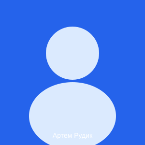

Вітаю на моєму портфоліо!
Привіт! Мене звати Артем Таран, і я навчаюся на спеціальності комп'ютерних наук. Моя мета — стати професійним фронтенд-розробником.
Зараз я вивчаю основи HTML5, семантичну розмітку та роботу з системою контролю версій Git.
Код — це поезія логіки.
Мої ключові цілі
- Опанувати HTML, CSS та JavaScript
- Вивчити сучасний фреймворк (React або Vue)
- Створити власний open-source проєкт
Основні навички
- HTML5 та семантична розмітка
- Git та GitHub
- Командна робота та самоорганізація
Про цей сайт
